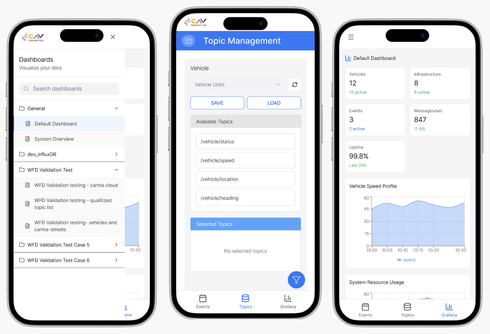
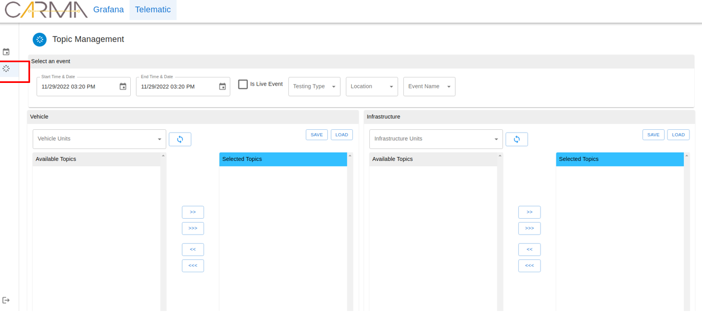

Turning dense telematics data into decisions researchers can make on the road
Research teams were data-rich but insight-poor, trying to spot which vehicles needed attention from dense desktop screens inside a moving vehicle. I restructured the experience as a mobile-first tool that surfaces critical alerts and puts the most important information first.

- Role
- UI/UX Designer
- Client
- Leidos / CARMA Program
- Timeframe
- Design sprint
- Tools
- Figma
- Method
- Agile product delivery
Dense desktop screens, used from a moving vehicle
Research and field teams needed to interpret complex vehicle telemetry in real time, but the legacy workflow depended on dense, spreadsheet-like web layouts that were hard to use in active field conditions. That added navigation friction and delayed time-sensitive decisions.
The users are internal Leidos research teams running vehicle studies. They monitor telematics data, check event details and make operational decisions on the road. Before this redesign, all of it required a desktop.

Benchmark first, then simplify
I worked within a compressed agile sprint. I ran a competitive systems analysis of existing telematics platforms to find the mental models people already expect for data visualization, then used it with heuristic findings to set redesign priorities.
- Mobile-first access to vehicle and event data for teams on the go
- Clear information hierarchy and quick actions for field decisions
- Fewer navigation steps than the desktop workflows
- Terminology consistent with the existing web platform
- Quick scanning of vehicle status on small screens
Glanceable first, details second
I prioritized glanceable telemetry to support situational awareness, with a clear hierarchy for faster interpretation and intervention decisions.
Glanceable data hierarchy
Safety-critical telemetry markers are visually separated from informational data, so users can assess status at a glance without reading dense tables.
Situational awarenessSimplified navigation
Desktop workflows that took 4–5 taps were condensed into a single contextual action, so researchers make fewer decisions while on the road.
Fewer stepsConsistent terminology
All labels stay aligned with the existing web platform, so experienced users learn a new interaction model, not a new vocabulary.
FamiliarityReused patterns
Data cards, status indicators and alert hierarchies were carried over from the web system and adapted for mobile instead of rebuilt.
Low learning curveWho I worked with
I worked with product stakeholders and engineering to define scope and feasibility. Direct primary research was limited in this phase, so competitive references and heuristic findings drove the redesign priorities.
A foundation for field use
The sprint produced a mobile-first decision-support prototype with a clearer telemetry hierarchy, designed so researchers can check vehicle data and act without a crowded screen.
It gives the team a practical foundation for future implementation focused on operator performance in live research contexts.